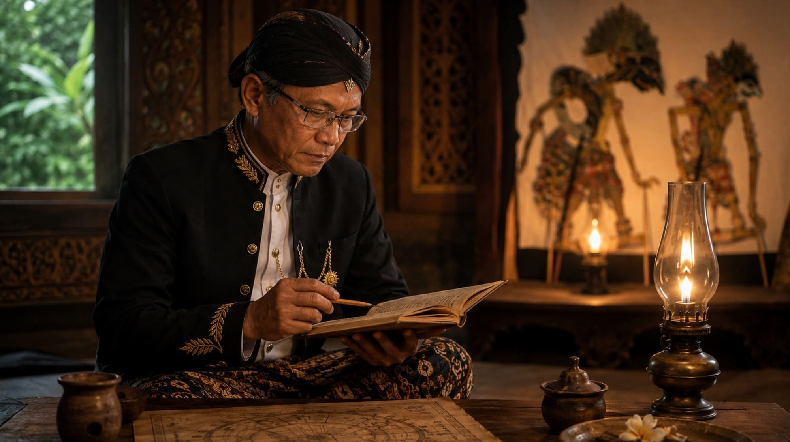

Weninging Cipta dalam Kawruh Sejati

1. Pendahuluan.
Kehidupan manusia senantiasa berhadapan dengan berbagai persoalan yang menuntut pemahaman, pertimbangan, dan keputusan. Dalam menghadapi persoalan tersebut, manusia tidak cukup hanya mengumpulkan informasi atau mengikuti pendapat yang telah berkembang. Manusia juga perlu memiliki kejernihan dalam memahami apa yang dihadapi, membedakan kenyataan dari dugaan, serta menimbang akibat dari keputusan yang akan diambil.
Kejernihan semacam ini menjadi penting karena aktivitas cipta dapat dipengaruhi oleh berbagai keadaan. Keinginan, ketakutan, kepentingan pribadi, prasangka, dan keterikatan pada pendapat tertentu dapat mempengaruhi cara seseorang memahami kenyataan. Akibatnya, sesuatu yang belum tentu benar dapat dianggap benar, sedangkan kenyataan yang tidak sesuai dengan keinginan dapat diabaikan.
Dalam Kawruh Sejati, persoalan tersebut berkaitan dengan Weninging Cipta. Istilah ini menunjuk pada kejernihan cipta dalam menjalankan aktivitasnya. Cipta tidak hanya berhubungan dengan kegiatan berpikir, tetapi juga dengan bagaimana manusia memahami, menimbang, dan membentuk pengertian mengenai sesuatu yang dihadapi.
Weninging Cipta perlu dipahami bukan sebagai tuntutan untuk menghentikan aktivitas berpikir, melainkan sebagai prinsip agar aktivitas tersebut berlangsung secara jernih. Pikiran tetap bekerja, pertanyaan tetap diajukan, dan pendapat tetap dapat diuji. Namun, proses itu tidak semestinya dikendalikan oleh prasangka atau keinginan untuk membenarkan diri sendiri.
Melalui Weninging Cipta, Kawruh Sejati menempatkan kejernihan dalam memahami kenyataan sebagai bagian penting dari kehidupan yang sadar dan bertanggung jawab.
2. Pengertian Weninging Cipta.
Secara sederhana, Weninging Cipta dapat dipahami sebagai keadaan kejernihan dalam aktivitas cipta. Kata wening menunjuk pada kejernihan, sedangkan cipta berkaitan dengan aktivitas batin yang membentuk pemahaman, pertimbangan, dan pengertian.
Dengan demikian, Weninging Cipta bukan sekadar keadaan tidak berpikir atau tidak memiliki persoalan. Seseorang dapat berada dalam suasana tenang, tetapi belum tentu memiliki pemahaman yang jernih. Sebaliknya, seseorang dapat sedang menghadapi persoalan yang rumit, tetapi tetap mampu menimbangnya secara teratur dan tidak tergesa-gesa mengambil kesimpulan.
Kejernihan cipta terlihat dari cara seseorang berhubungan dengan persoalan yang dihadapinya. Ia berusaha memahami keadaan sebagaimana adanya, memeriksa alasan yang mendasari pendapatnya, serta bersedia meninjau kembali kesimpulan apabila ditemukan alasan yang lebih kuat.
Weninging Cipta juga tidak berarti bahwa seseorang harus selalu benar dalam setiap pemikirannya. Kejernihan justru memungkinkan seseorang menyadari keterbatasan pemahamannya. Ia tidak menganggap ketidaktahuan sebagai sesuatu yang harus ditutupi dan tidak menjadikan pendapat pribadi sebagai ukuran mutlak bagi kebenaran.
Oleh karena itu, Weninging Cipta lebih tepat dipahami sebagai prinsip kejernihan dalam menjalankan aktivitas cipta, bukan sebagai jaminan bahwa seluruh hasil pemikiran seseorang pasti benar.
3. Weninging Cipta dan Aktivitas Kesadaran.
Dalam Kawruh Sejati, kesadaran dipahami melalui aktivitasnya. Pemahaman terhadap kesadaran tidak perlu dimulai dengan memastikan unsur-unsur hakikinya yang belum diketahui secara pasti, tetapi dapat diarahkan pada pengamatan terhadap bagaimana kesadaran bekerja dalam kehidupan.
Dalam kerangka tersebut, aktivitas cipta merupakan salah satu bagian penting yang dapat diperhatikan melalui cara manusia memahami, menimbang, dan mengambil keputusan. Weninging Cipta berkaitan dengan kualitas aktivitas tersebut.
Ketika seseorang menerima suatu informasi, misalnya, aktivitas cipta tidak berhenti pada penerimaan informasi itu. Ia dapat membandingkannya dengan pengalaman, memeriksa alasan yang menyertainya, dan mempertimbangkan apakah informasi tersebut sesuai dengan kenyataan yang diketahui. Kejernihan cipta membantu proses tersebut berlangsung tanpa terlalu cepat dikuasai oleh kesimpulan awal.
Hal yang sama berlaku ketika seseorang menghadapi perbedaan pendapat. Tanpa kejernihan, perbedaan mudah dipahami sebagai ancaman terhadap harga diri atau kedudukan pribadi. Dengan kejernihan cipta, perbedaan dapat ditempatkan sebagai kesempatan untuk memeriksa kembali alasan, memperjelas pengertian, dan menemukan bagian persoalan yang belum dipahami.
Dengan demikian, Weninging Cipta tidak hanya berkaitan dengan apa yang dipikirkan, tetapi juga dengan bagaimana aktivitas berpikir itu berlangsung. Perhatian terhadap proses ini membuat seseorang lebih mampu membedakan antara kenyataan, penafsiran, dugaan, dan keinginan pribadi.
4. Hubungan Weninging Cipta dengan Tulusing Rasa.
Weninging Cipta memiliki hubungan erat dengan Tulusing Rasa. Apabila Weninging Cipta menekankan kejernihan dalam aktivitas cipta, Tulusing Rasa berkaitan dengan ketulusan rasa dalam menyikapi kenyataan dan menjalani kehidupan.
Kejernihan berpikir tanpa ketulusan dapat digunakan untuk membenarkan kepentingan pribadi. Seseorang mungkin mampu menyusun alasan yang tampak runtut, tetapi alasan tersebut sengaja diarahkan untuk menutupi kepentingan atau menghindari tanggung jawab. Dalam keadaan demikian, kecakapan berpikir belum tentu mencerminkan kejernihan yang utuh.
Sebaliknya, ketulusan rasa yang tidak disertai kejernihan cipta dapat membuat seseorang bertindak berdasarkan niat baik, tetapi kurang mempertimbangkan kenyataan dan akibat tindakannya. Niat yang baik tidak dengan sendirinya menjamin bahwa keputusan yang diambil telah tepat.
Hubungan keduanya karena itu penting. Weninging Cipta membantu seseorang memahami persoalan dengan jernih, sedangkan Tulusing Rasa membantu menjaga ketulusan dalam menyikapi dan menjalani pemahaman tersebut.
Keselarasan ini bukan berarti cipta dan rasa harus dipandang sebagai aktivitas yang sama. Keduanya memiliki penekanan berbeda, tetapi dapat saling mendukung dalam kehidupan. Kejernihan cipta memberi dasar bagi pertimbangan yang teratur, sementara ketulusan rasa menjaga agar pemahaman tidak semata-mata digunakan untuk memenuhi kepentingan diri sendiri.
5. Weninging Cipta dan Karsa Sejati.
Weninging Cipta juga memiliki hubungan dengan Karsa Sejati. Dalam Kawruh Sejati, Karsa Sejati dipahami sebagai kehendak yang berakar pada Weninging Cipta dan Tulusing Rasa, diarahkan kepada keutamaan, serta diwujudkan dalam laku.
Hubungan tersebut memperlihatkan bahwa kejernihan cipta bukan tujuan yang terpisah dari kehidupan. Pemahaman yang jernih perlu mengambil bagian dalam pembentukan kehendak dan pelaksanaan tindakan.
Seseorang dapat mengetahui bahwa suatu tindakan membawa akibat buruk, tetapi tetap melakukannya karena dorongan kepentingan pribadi. Dalam keadaan demikian, pengetahuan belum menjadi dasar yang kuat bagi kehendak. Demikian pula, seseorang dapat menginginkan sesuatu yang dianggap baik, tetapi belum memahami secara jernih apakah cara yang ditempuh benar-benar mendukung kebaikan tersebut.
Weninging Cipta membantu Karsa Sejati dengan menyediakan kejernihan dalam mempertimbangkan tujuan, cara, dan akibat tindakan. Tulusing Rasa turut menjaga ketulusan orientasi batin, sedangkan Karsa Sejati mengarahkan kehendak kepada keutamaan dan pelaksanaannya.
Melalui hubungan ini, kejernihan cipta memperoleh arti praktis. Ia tidak berhenti sebagai gagasan yang dipahami, melainkan mengambil bagian dalam kehidupan melalui keputusan dan tindakan yang dapat dipertanggungjawabkan.
6. Hambatan terhadap Weninging Cipta.
Weninging Cipta dapat terhambat oleh berbagai kecenderungan dalam kehidupan sehari-hari. Salah satunya ialah prasangka, yaitu kecenderungan menetapkan penilaian sebelum persoalan dipahami secara memadai. Prasangka membuat seseorang lebih mudah menerima informasi yang sesuai dengan pendapatnya dan menolak informasi yang berlawanan.
Hambatan berikutnya adalah keterikatan pada pendapat pribadi. Ketika seseorang menjadikan pendapatnya sebagai bagian yang tidak boleh dipertanyakan, kegiatan berpikir dapat berubah menjadi upaya mempertahankan pendapat tersebut. Tujuan memahami kenyataan akhirnya tergeser oleh keinginan untuk menang atau membuktikan diri benar.
Dorongan emosional juga dapat memengaruhi kejernihan cipta. Kemarahan, ketakutan, kecemasan, dan keinginan yang berlebihan dapat mempersempit perhatian sehingga seseorang hanya melihat bagian tertentu dari persoalan. Keadaan ini tidak berarti bahwa emosi harus dihilangkan, tetapi bahwa penilaian perlu dilakukan dengan memperhatikan pengaruh keadaan batin terhadap pemahaman.
Selain itu, penerimaan informasi tanpa pemeriksaan dapat menjadi hambatan. Sesuatu yang sering diulang atau disampaikan oleh orang yang dihormati belum tentu benar hanya karena alasan tersebut. Informasi tetap perlu dipahami menurut konteks, alasan, dan kesesuaiannya dengan kenyataan.
Mengenali hambatan-hambatan ini merupakan bagian dari upaya mengembangkan Weninging Cipta. Seseorang tidak harus menganggap dirinya telah sepenuhnya jernih, melainkan perlu terus memeriksa cara memahami dan menilai sesuatu.
7. Penerapan Weninging Cipta dalam Kehidupan.
Weninging Cipta dapat diterapkan melalui kebiasaan sederhana yang dilakukan secara berkelanjutan.
Pertama, membedakan fakta dari penafsiran. Ketika menghadapi suatu peristiwa, seseorang perlu memeriksa apa yang benar-benar diketahui dan apa yang baru berupa dugaan. Pembedaan ini membantu mencegah kesimpulan yang melampaui bukti.
Kedua, memeriksa alasan di balik pendapat. Pendapat yang diyakini benar tetap perlu memiliki dasar yang dapat dijelaskan. Kesediaan memeriksa alasan bukan tanda kelemahan, melainkan bagian dari tanggung jawab dalam memahami kenyataan.
Ketiga, memberi ruang bagi pertimbangan. Tidak setiap persoalan harus segera menghasilkan keputusan. Dalam keadaan tertentu, menunda kesimpulan sampai informasi yang diperlukan tersedia justru merupakan tindakan yang lebih jernih.
Keempat, bersedia memperbaiki pemahaman. Apabila ditemukan kekeliruan, seseorang perlu membedakan antara mempertahankan harga diri dan mempertahankan kebenaran. Mengakui kekeliruan dapat menjadi langkah penting untuk menghasilkan pemahaman yang lebih tepat.
Kelima, menghubungkan pemahaman dengan tindakan. Kejernihan cipta perlu diperiksa melalui keputusan yang dihasilkan dan akibat yang ditimbulkannya. Pemahaman yang hanya berhenti pada pembicaraan belum sepenuhnya menunjukkan bagaimana kejernihan itu mengambil bagian dalam kehidupan.
Penerapan tersebut tidak dimaksudkan sebagai prosedur mekanis yang menjamin setiap keputusan selalu benar. Kebiasaan-kebiasaan itu merupakan bentuk latihan untuk menjaga aktivitas cipta agar tetap terbuka terhadap kenyataan, alasan, dan kemungkinan perbaikan.
8. Penutup.
Weninging Cipta dalam Kawruh Sejati merupakan prinsip kejernihan dalam menjalankan aktivitas cipta. Kejernihan ini tidak identik dengan ketiadaan pikiran, ketenangan sesaat, atau keyakinan bahwa seseorang selalu benar. Weninging Cipta terlihat dalam kesediaan memahami kenyataan, memeriksa alasan, mengenali pengaruh prasangka, serta memperbaiki kesimpulan apabila diperlukan.
Dalam hubungannya dengan Tulusing Rasa, Weninging Cipta membantu membangun keselarasan antara kejernihan pemahaman dan ketulusan dalam menyikapi kehidupan. Dalam hubungannya dengan Karsa Sejati, Weninging Cipta memberikan dasar pertimbangan bagi kehendak yang diarahkan kepada keutamaan dan diwujudkan dalam laku.
Oleh karena itu, Weninging Cipta bukan hanya gagasan mengenai kejernihan batin, melainkan prinsip yang dapat dikenali melalui aktivitas cipta dalam kehidupan nyata. Nilainya tampak dalam cara seseorang memahami persoalan, menimbang keputusan, menyikapi perbedaan, dan bertanggung jawab atas tindakannya.
Melalui Weninging Cipta, Kawruh Sejati menempatkan kejernihan pemahaman sebagai bagian penting dari upaya menjalani kehidupan secara sadar, tulus, dan utama.
FAQ — Weninging Cipta dalam Kawruh Sejati.
1. Apa yang dimaksud dengan Weninging Cipta?
Weninging Cipta adalah kejernihan dalam aktivitas cipta untuk memahami kenyataan, menimbang persoalan, dan membentuk kesimpulan secara bertanggung jawab.
2. Apakah Weninging Cipta berarti menghentikan pikiran?
Tidak. Weninging Cipta justru berkaitan dengan aktivitas cipta yang tetap bekerja secara jernih, terbuka, dan tidak tergesa-gesa menetapkan kesimpulan.
3. Apa hubungan Weninging Cipta dengan Tulusing Rasa?
Weninging Cipta menekankan kejernihan pemahaman, sedangkan Tulusing Rasa menekankan ketulusan dalam menyikapi kenyataan. Keduanya saling mendukung.
4. Apa hubungan Weninging Cipta dengan Karsa Sejati?
Weninging Cipta menjadi dasar kejernihan pertimbangan bagi Karsa Sejati, yaitu kehendak yang berakar pada Weninging Cipta dan Tulusing Rasa, diarahkan kepada keutamaan, serta diwujudkan dalam laku.
5. Apa yang menghambat Weninging Cipta?
Prasangka, keterikatan pada pendapat pribadi, dorongan emosional yang menguasai penilaian, dan penerimaan informasi tanpa pemeriksaan dapat menghambat kejernihan cipta.
6. Bagaimana Weninging Cipta diterapkan dalam kehidupan sehari-hari?
Dengan membedakan fakta dan dugaan, memeriksa alasan, mempertimbangkan akibat keputusan, bersedia memperbaiki pemahaman, serta menerapkan hasil pemikiran dalam tindakan nyata.